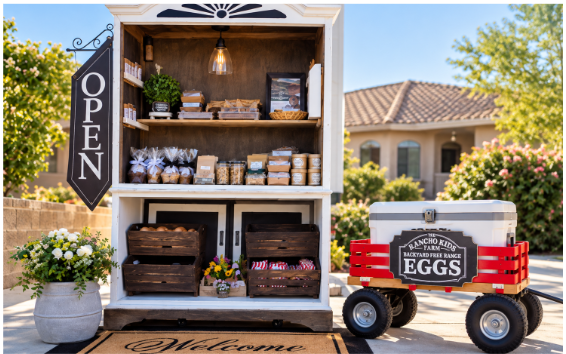

We’d love to hear from you
Come say hello.
Stop by on a Saturday morning, send us a note, or follow along to see what the kids are making.
Your Saturday morning invitation
Seasonal hours,
Saturday mornings.
We’re a seasonal neighborhood farm stand with a changing assortment of things we’ve grown, gathered, or made ourselves. Come see what’s on the stand and say hello.
Farm stand hours
Saturdays
8:00 AM–12:00 PM
Checking the next farm stand date…
Email us
RanchoKidsFarm@gmail.com
See youSaturday!
What's coming up at the farm